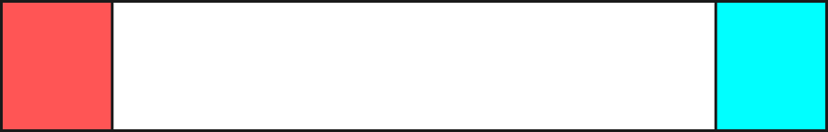
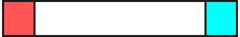
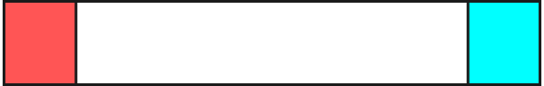

6.2 Kontextfreie Grammatiken und Kellerautomaten
Beispiel 6.2.1 Betrachten wir die Grammatik
$$
\begin{align*}
S&\rightarrow A \ | \ B \ | \ C \ | \ \epsilon \\
A&\rightarrow \texttt{\{} B \texttt{\}} S \\
B&\rightarrow \texttt{[} C \texttt{]} S \\
C&\rightarrow \texttt{(} A \texttt{)} S \ | \ \texttt{()}S \\
\end{align*}
$$
Ein Wort in der erzeugten Sprache wäre zum Beispiel
{()()}()
Schreiben wir nun einen Kellerautomaten, der diese
Sprache akzeptiert. Die Idee ist, dass wir Terminalsymbole und
Nichtterminalsymbole auf den Stack legen. Ein
[
oben auf dem
Stack bedeutet dann
ich will jetzt sofort ein
[lesen;
ein
Nichtterminal wie $A$ oben auf dem Stack bedeutet, dass wir als
nächstes ein von $A$ ableitbares Wort, also ein
$A \rightarrow w \in \Sigma^*$ lesen wollen. Um ein $w$ mit
$A \rightarrow w$ lesen zu können, müssen wir
sofort
ein
{
lesen, dann ein Wort $v$ mit
$B \rightarrow v$,
dann ein
}
und
so weiter. Wir können das also im Automaten implementieren, indem
wir $A$ vom Stack löschen und durch $\texttt{\{} B \texttt{\}} S$
auf den Stack legen, mit dem linkesten Symbol zuoberst. Wenn wir
für ein Nichtterminal mehrere Regeln haben, also z.B.
$X \rightarrow \alpha$ und
$X \rightarrow \beta$,
dann können
ein $X$ auf dem Stack sowohl durch $\alpha$ als auch durch
$\beta$ ersetzen. Hierfür benötigen wir den Nichtdeterminismus.
Beachten Sie, dass wir ein Nichtterminal grundsätzlich immer
durch die entsprechende rechte Seite ersetzen können, egal, was
das nächste Zeichen ist; es wird im Automaten also ein
$\step{\epsilon}$-Übergang
sein. Konkret also bauen wir für
obige Grammatik die folgenden Automatentransitionen:
$$
\begin{align*}
(q_1, S)&\step{\epsilon} (q_1, A) \\
(q_1, S)&\step{\epsilon} (q_1, B) \\
(q_1, S)&\step{\epsilon} (q_1, C) \\
(q_1, S)&\step{\epsilon} (q_1, \epsilon) \\
\hline
(q_1,A)&\step{\epsilon} (q_1, \texttt{\{} B \texttt{\}} S) \\
\hline
(q_1,B)&\step{\epsilon} (q_1, \texttt{[} C \texttt{]} S) \\
\hline
(q_1,C)&\step{\epsilon} (q_1, \texttt{(} A \texttt{)} S) \\
(q_1,C)&\step{\epsilon} (q_1, \texttt{(} \texttt{)} S) \\
\hline
(q_1,\texttt{\{})&\step{\texttt{\{}} (q_1, \epsilon) \\
(q_1,\texttt{\}})&\step{\texttt{\}}} (q_1, \epsilon) \\
(q_1,\texttt{[})&\step{\texttt{[}} (q_1, \epsilon) \\
(q_1,\texttt{]})&\step{\texttt{]}} (q_1, \epsilon) \\
(q_1,\texttt{(})&\step{\texttt{(}} (q_1, \epsilon) \\
(q_1,\texttt{)})&\step{\texttt{)}} (q_1, \epsilon) \\
\end{align*}
$$
Dies ist völlig mechanisch und benötigt kein Nachdenken. Wie
fangen wir an? Wir legen anfangs ein $S$ auf den leeren Stack.
Wenn dieses $S$ abgearbeitet ist und das Wort zu Ende ist,
akzeptieren wir, und nur dann. Um festzustellen, dass wir
wirklich den Stack ganz leer gemacht haben, brauchen wir die
Markierung
$.
Also:
$$
\begin{align*}
(\qstart, \epsilon) \step{\epsilon} (q_1, S \$) \\
(q_1, \$) \step{\epsilon} (\qend, \epsilon)
\end{align*}
$$
Unsere Maschine hat also nur drei Zustände: $\qstart$, $q_1$ und $\qend$, welches der akeptierende Endzustand ist. Beachten Sie, dass es von $\qend$ aus keine ausgehenden Transitionen gibt; sollte es also nach Erreichen von $\qend$ noch weitere Zeichen im Eingabewort geben, so kann der Automat keine weiteren Schritte durchführen, was einem reject entspricht. Erreichen des Zustandes $\qend$ führt also nur dann zu einem accept, wenn dies am Ende des Wortes geschieht.


